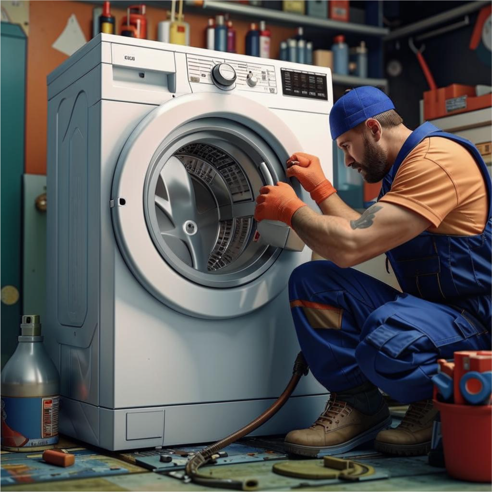
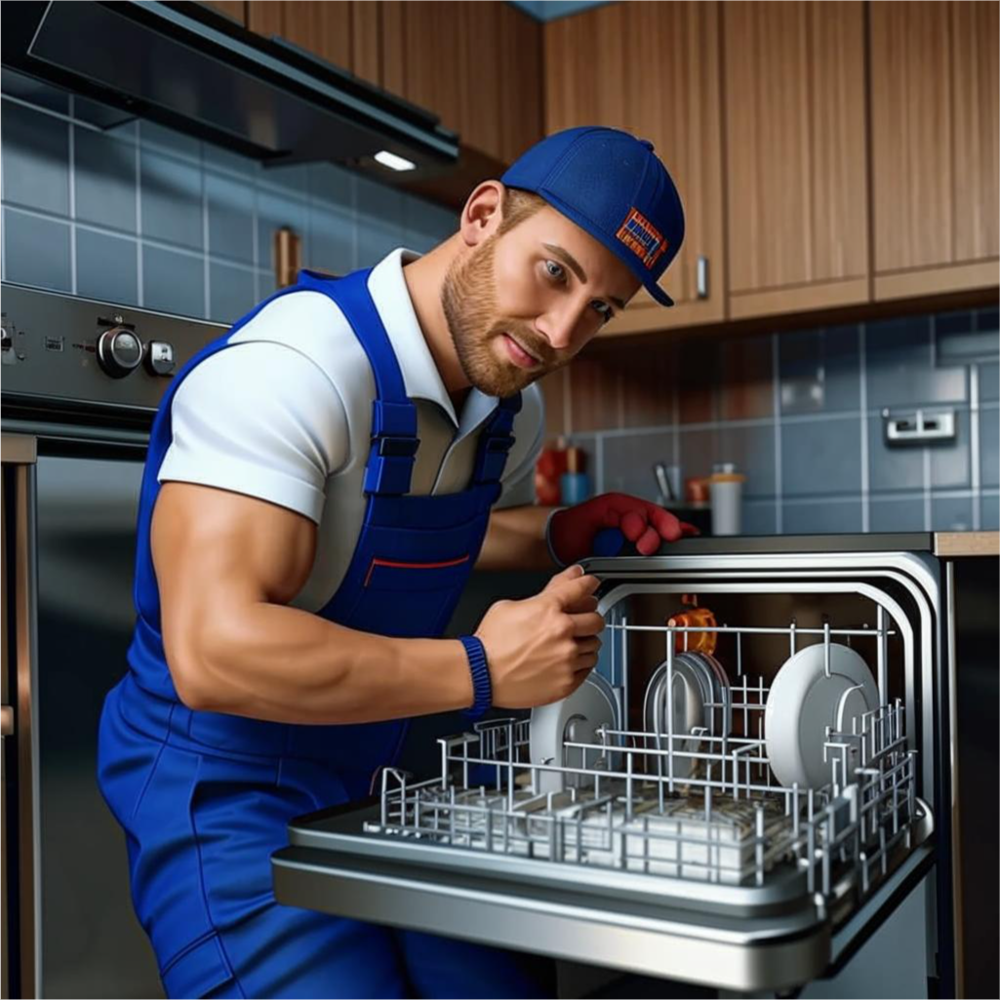
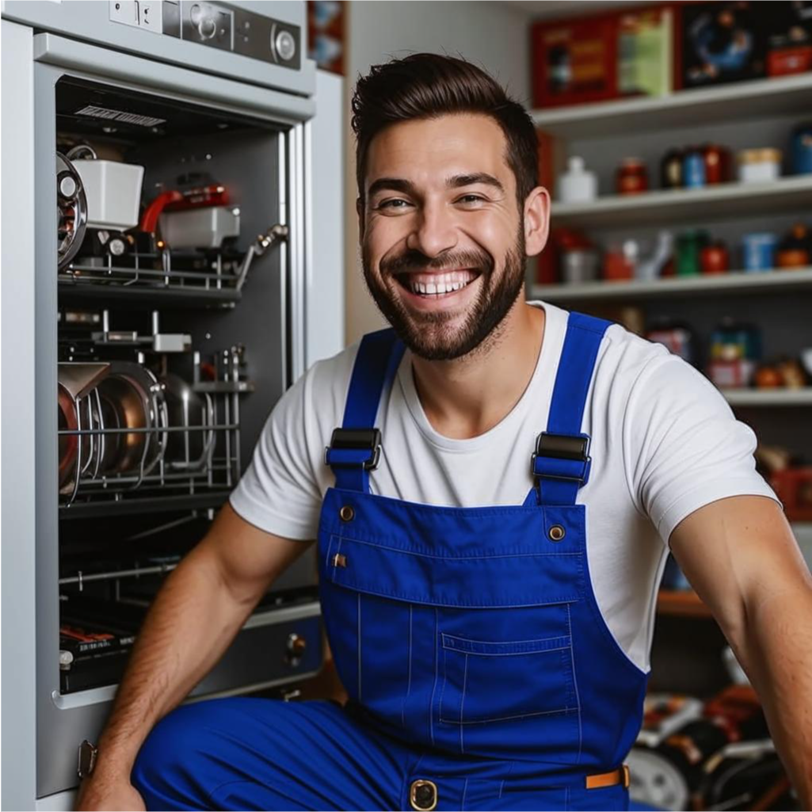

Услуги

Ремонт стиральных машин
Ремонт стиральных машин любой сложности и любой марки. С выбором места ремонта и приемлимой ценой.

Ремонт посудомоечных машин
Ремонт посудомоечных машин любой сложности и любой модели. С выбором места ремонта.С выбором места ремонта и приемлимой ценой.

Консультирование по ремонту
Вы можете связаться с нами для консультации. Например если вы считаете, что можете самостоятельно справиться с ремонтом или уже приступили к ремонту техники, но всё равно требуется подсказка мастера - связывайтесь с нами по контактам ниже, будем рады помочь!
О нас
Данный сайт создан специально для тех людей, которые хотят найти решение своих проблем с приятным соотношением ЦЕНЫ и КАЧЕСТВА. Через этот ресурс вы можете заказать мастреа на дом, или же просто обратиться за консультацией. Всё цены на работы мастеров устанавливаются самими мастерами при выезде и осмотре техники, или же заранее по описанию проблемы, если это возможно. Мастера которые находяться с нами в сотрудничестве являются проверенными лицами, во ибежании каких либо проблем. Так же, для вас как для клиента, открывается возможность найти проверенного мастера, как постоянного, что бы позднее знать к кому обратиться и быть удвлетворёнными результатом реомонта, отношением и ценой.